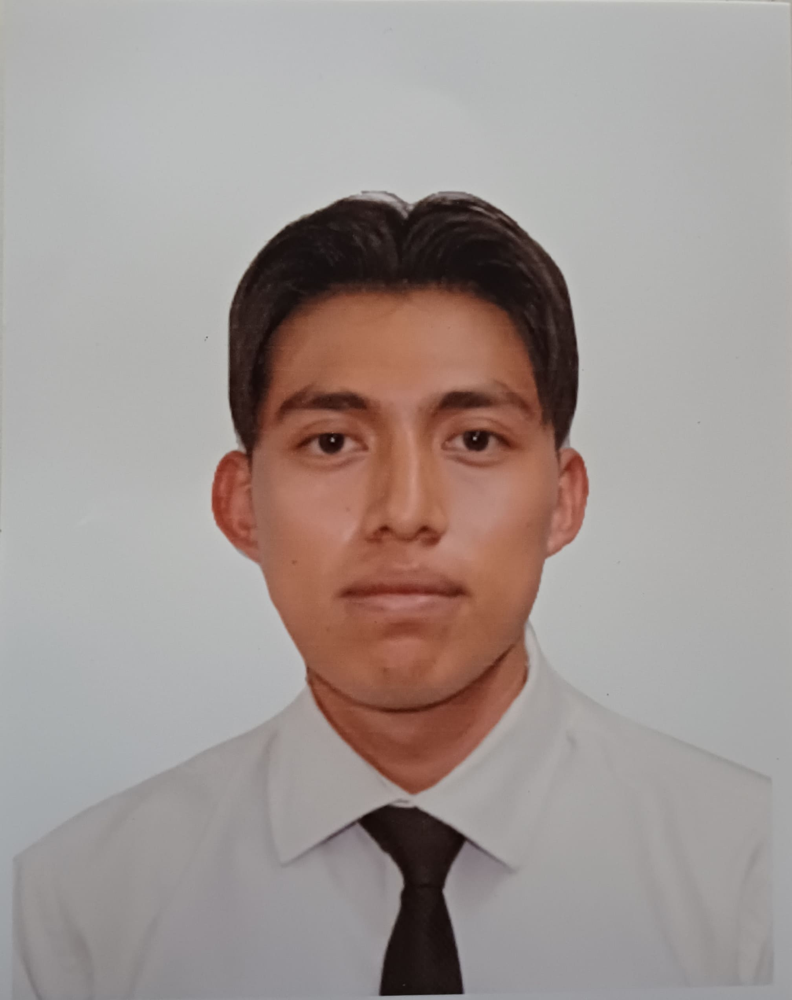

Rodrigo Olivarez | WDD 130.
I'm Rodrigo Olivarez. I was born in Veracruz but currently live in Mexico City. I've been preparing for a bright future. I'm 22 years old and ready for the tests. I love cats, and I'm learning more and more about what it means to have companionship in life.